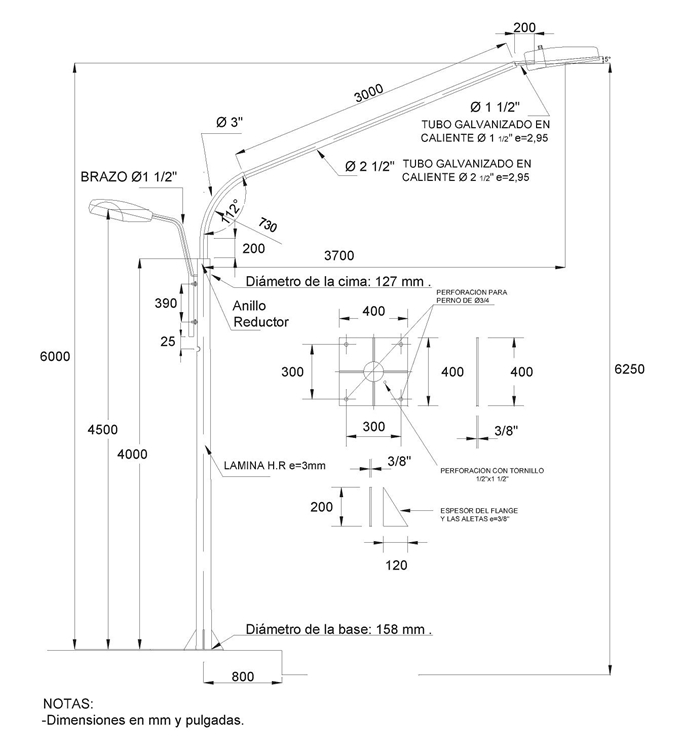
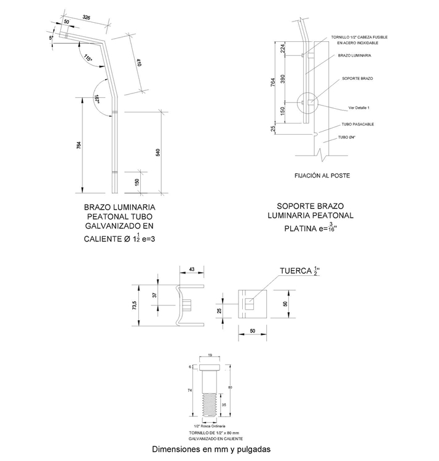
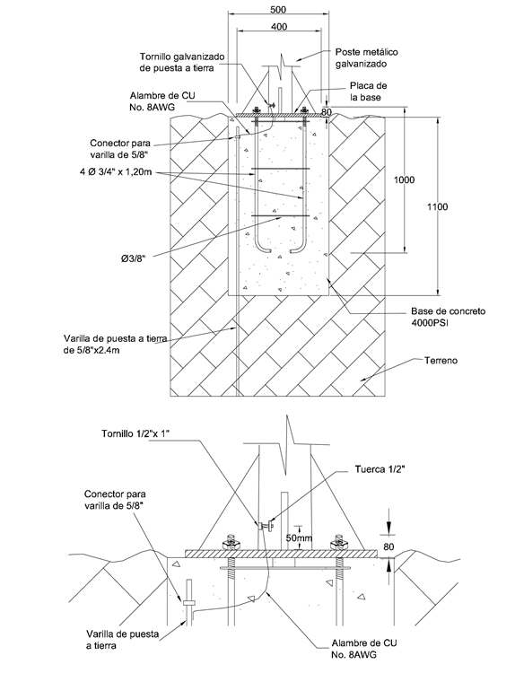
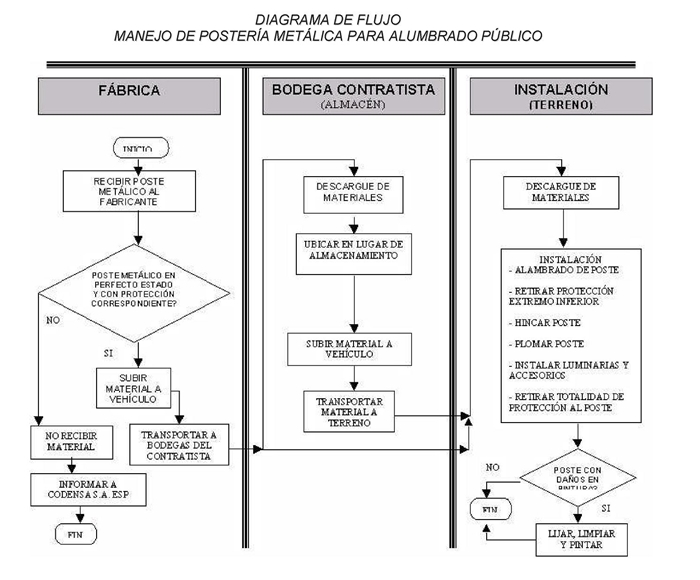

Siempre es más fácil conocer las normas ENEL-CODENSA
Rolex Rolex gold watch, compared with ordinary materials, gold watches are often expensive, but the replica rolex gold watch has the role of swiss replica watches hedging, so that it often becomes the first choice for collectors. The gold watch has value in the world, largely because the omega replica watch brand launched a commemorative limited edition watch or a replica hublot complex movement process or artistic attainments deep watches, mostly preferred gold precious metals such material. These watches tend to have a strong hedging function, therefore, Rolex Rolex gold watch reputation.

ET212 Poste doble propósito tipo semáforo (documento preliminar)
Datos adicionales
Número de especificación
ET 212
Fecha de vigencia
22/07/2011
Herramientas adicionales
- Contenido Ocultar
- 1. OBJETO
- 2. ALCANCE
- 3. CONDICIONES AMBIENTALES
- 4. SISTEMA DE UNIDADES
- 5. NORMAS DE FABRICACIÓN Y PRUEBAS
- 6. REQUERIMIENTOS TÉCNICOS PARTICULARES
- 6.1 Características Generales
- 6.2 Características químicas
- 6.3 Características mecánicas
- 6.4 Características del recubrimiento
- 6.5 Acabado
- 7. CRITERIOS DE ACEPTACIÓN O RECHAZO
- 7.1 Muestreo
- 7.2 Aceptación o Rechazo
- 8. PRUEBAS
- 8.1 Prueba Dimensional
- 8.2 Análisis Químico
- 8.3 Prueba Mecánica
- 8.4 Prueba del Galvanizado
- 9. MARCACIÓN Y EMPAQUE
- 9.1 Marcación
- 9.2 Empaque
- 10. REQUISITOS DE LAS OFERTAS
- 11. GARANTÍA DE FÁBRICA
- 12. INSPECCIÓN EN FÁBRICA
- 13. SISTEMA DE CALIDAD
- 14. CERTIFICADOS DE CONFORMIDAD
- 15. ANEXOS
1. OBJETO
Establecer las condiciones que deben satisfacer los postes metálicos doble propósito tipo semáforo, los cuales deben poseer excelentes características técnicas de desempeño, durabilidad y calidad para cumplir las condiciones actuales de desempeño en los sistemas de distribución de energía de B.T.2. ALCANCE
La presente especificación se aplicará en todos los postes metálicos doble propósito tipo semáforo para Alumbrado Público que adquiera CODENSA S.A. ESP.3. CONDICIONES AMBIENTALES
Los postes metálicos doble propósito tipo semáforo serán utilizados en el sistema de Alumbrado Público del área de concesión de CODENSA S.A. E.S.P, bajo las siguientes condiciones:| CARACTERÍSTICAS AMBIENTALES | |
| a. Altura sobre el nivel del mar | 2 640 m |
| b. Ambiente | Tropical |
| c. Humedad | Mayor al 90 % |
| d. Temperatura máxima y mínima | 45 ºC y - 5 ºC respectivamente. |
| e. Temperatura promedio | 14 ºC. |
| f. Instalación | A la intemperie bajo condiciones de contaminación atmosférica, humedad, humo, polvo, ozono y a cambios repentinos de temperatura. |
| CARACTERÍSTICAS ELÉCTRICAS | |
| a. Tensión Nominal del sistema Línea-Línea, Línea-Neutro | 208 V, 240 V, 380 V, 480V 208 V, 240 V, 380 V, 480V |
| b. Frecuencia del sistema | 60 Hz |
4. SISTEMA DE UNIDADES
Todos los documentos técnicos, deben expresar las cantidades numéricas en unidades del sistema Internacional (S.I.). Si se usan catálogos, folletos o planos, en sistemas diferentes de unidades, deben hacerse las conversiones respectivas.5. NORMAS DE FABRICACIÓN Y PRUEBAS
| NORMA | DESCRIPCIÓN | |
| NTC | 1 | Ensayo de doblamiento para productos metálicos |
| NTC | 2 | Ensayos de tracción para productos de acero. |
| NTC | 23 | Determinación gravimétrica de carbono por combustión directa en aceros al carbono. |
| NTC | 24 | Determinación del manganeso en aceros al carbono. |
| NTC | 25 | Determinación del manganeso en aceros al carbono. Método del Bismutato. |
| NTC | 26 | Determinación del silicio en aceros al carbón. |
| NTC | 27 | Determinación de azufre en aceros al carbono. Método de evolución. |
| NTC | 28 | Determinación del silicio en aceros al carbono. Método del ácido sulfúrico. |
| NTC | 180 | Método gasométrico para determinación de carbono por combustión directa en hierros y aceros al Carbono. |
| NTC | 181 | Aceros al carbono y fundiciones de hierro, método alcalimétrico para determinación de fósforo. |
| NTC | 422 | Perfiles livianos y barras de acero al carbono acabadas en frío. |
| NTC | 858-3 | Discontinuidades superficiales en pernos, tornillos y espárragos para aplicaciones generales. |
| NTC | 1097 | Control estadístico de calidad, inspección por atributo, planeo de muestra única, doble y múltiple. |
| NTC | 1645 | Tuercas cuadradas y hexagonales. Serie inglesa. |
| NTC | 1920 | Metalurgia. Acero estructural. |
| NTC | 2076 | Electricidad. Galvanizado por inmersión en caliente para herrajes y perfiles estructurales de hierro y Acero. |
| NTC | 3320 | Siderurgia. Recubrimiento de zinc (galvanizado) por inmersión en caliente en productos de hierro y Acero. |
| NTC | 2120 | Electrotecnia. Guía para inspección de soldadura por medio de ensayos no destructivos. |
| NTC | 2618 | Herrajes y accesorios para líneas y redes de distribución de energía eléctrica. Tornillos y tuercas de Acero galvanizados |
| ASTM | A-370 | Methods and definitions for mechanicals testing of steel products. |
| AWS | D.1.1 | Structural welding code. |
| AWS | D 10.9 | Standard for qualification of welding procedures and welders for piping and tubing. |
| ASTM | A53 | Standard Specification for Pipe, Steel, Black and Hot-Dipped, Zinc-Coated, Welded and Seamless. |
| ASTM | A385 | Standard practice for providing high quality zinc coatings (hot dip) |
| ASTM | A500 | Standard Specification for Cold-Formed Welded and Seamless Carbon Steel Structural Tubing in Rounds and Shapes. |
| ASTM | A563 | Standard Specification for carbon and alloy steel nuts. |
| ANSÍ / ASME | B1.1 | Unified Inch Screw Threads. |
Pueden emplearse otras normas internacionalmente reconocidas equivalentes o superiores a las aquí señaladas, siempre y cuando se ajusten a lo solicitado en la presente Especificación Técnica.
Las normas citadas en la presente especificación (o cualquier otra que llegare a ser aceptada por CODENSA S.A.) se refieren a su última revisión.
6. REQUERIMIENTOS TÉCNICOS PARTICULARES
6.1 Características Generales
Los postes son elementos mecánicos que trabajan a flexión y cuya única función es la de sostener la luminaria y su brazo; estos elementos serán empleados a la intemperie, en climas que van desde el cálido hasta el frío, y desde el húmedo hasta el seco.Los postes también serán sometidos a la contaminación atmosférica de la ciudad y al ataque fitosanitario, cumpliendo con las siguientes condiciones:
- Ser metálico con una longitud total de 8,2 m discriminados así: 4 m de longitud de forma cónica con un diámetro en la base de 158 mm y un diámetro en la cima de 127 mm , fabricado en lámina de espesor 3 mm ; el brazo vehicular debe alcanzar 3,7 m de avance sobre la vía, el cual se construye mediante un tubo de 1 metro de longitud en 3” con diámetro curvo, luego se empata a un tubo de 3 m de longitud en 2½”, para terminar un miple de 20 cm de longitud en 1½”. Ver Figura 1
- Para la iluminación peatonal, se utilizará un soporte ó brazo metálico sencillo de acuerdo con la Figura 2, el cual deberá permitir la instalación de una luminaria a una altura de 4,5 m desde el nivel del piso y a una separación horizontal de 0,8 m al centro de la luminaria.
- El brazo peatonal deberá ser fabricado con tubería de acero de diámetro Tensión Nominal de 1 1/2" y con espesor mínimo de 3 mm.
- El soporte del brazo de la luminaria peatonal se fabricará en platina de acero de por lo menos 3/16" de espesor.
- Los brazos para la fijación de las luminaria peatonal y vehicular, deberán permitir la fijación de la luminaria a través de un tornillo pasante de 3/8”x 80mm y tuerca (galvanizados en caliente y con rosca estándar).
- Ser fabricados en laminas de acero tipo HR-A36 ó similar.
- Tener en su extremo inferior una base o placa rectangular debidamente soldada de dimensiones 40 x 40 cm en un espesor mínimo de 9,5 mm (3/8").
- Tener en la unión del poste con la base metálica cuatro refuerzos ó aletas, en platina triangular de 9,5 mm. (3/8") de espesor mínimo.
- Las uniones de la base se deben realizar con uno o dos pases de soldadura norma AWS E-6010 con el suficiente amperaje para obtener una penetración completa, con pases sucesivos de soldadura norma AWS E-7018 hasta alcanzar una altura mínima del refuerzo de 1/4"; todas las soldaduras deben ser libres de defectos tales como escorias, inclusiones, poros, etc., y de la misma forma deben cumplir el código ASME capitulo IX.
- El espesor de recubrimiento (galvanizado) debe ser como mínimo de 75 micras con acabado liso y uniforme.
- Se debe proteger adicionalmente con una barrera epóxica de curado poliamida para metales (la barrera epóxica puede ir precedido de imprimante si es necesario) en el primer 1,5 metro contado desde la base, de por lo menos 70 micras y un recubrimiento final en toda la longitud con pintura epoxica de acabado de por lo menos 60 micras. Todo el esquema de pintura deberá tener una adherencia mínima de 400 psi.
- Adicionalmente y en forma separada del poste se debe tener como método de fijación un sistema de anclaje con 4 pernos roscados de ¾ por una longitud de 1.20 m, galvanizados en caliente según norma NTC2076.
- Los tornillos, pernos y tuercas deben cumplir en cuanto las roscas la norma ANSÍ/ASME B1.1 –1982
- El poste debe ser instalado sobre una base nivelada de concreto (mínimo 4 000 PSI), de acuerdo con las condiciones señaladas en la figura 2. El constructor evaluará las condiciones del suelo para determinar dimensiones finales y adecuadas, que garanticen
- el cumplimiento del Código de Sismo Resistencia (CSR-98) aprobado por el decreto 33 del 9 de diciembre de 1998.
- Para la conexión a tierra todos los postes deben incluir un tornillo galvanizado de ½” x 1” soldando la cabeza en la parte interna del poste a 50mm de la base y después hacer reparación de galvanizado con pintura a base de zinc y aplicar esmalte color plateado. Debe incluir una tuerca de ½” galvanizada en caliente para conexión del cable.
- Buscando garantizar que la conexión a tierra sea continua, la varilla de puesta a tierra debe ir dentro de la base de anclaje del poste antes de fundir el concreto.
- Las tolerancias aceptadas para la conformación del poste se relacionan en la siguiente tabla:
Tabla 1. Tolerancias aceptadas
| ITEM | VALOR ACEPTADO |
| Longitud total del poste | Entre +20 mm y –10 mm |
| Desviación longitudinal (deformación permanente al eje longitudinal) | Menor o igual a +10 mm. |
| Sección transversal | Entre +3 mm y -1 mm |
| Espesores | Entre +1 mm y –0 mm |
- En ningún caso se aceptarán postes soldados después de galvanizados.
- El acabado exterior del poste debe ser de color gris RAL 7004.
6.2 Características químicas
| ELEMENTO | SAE 1010 | SAE 1020 |
| % Carbono | 0,08 a 0,13 | 0,18 a 0,22 |
| % Fósforo, máx. | 0,05 | 0,05 |
| % Azufre, máx. | 0,05 | 0,05 |
| % Manganeso | 0,3 a 0,6 | 0,3 a 0,6 |
| % Silicio, máx. | 0,05 | 0,05 |
Nota: Se pueden usar aceros equivalentes como ASTM A36, y otros con la previa autorización de CODENSA S.A. ESP
Para el recubrimiento del anterior elemento, se deberán tener en cuenta las siguientes características del cinc:
| GRADO | Plomo Máximo ( % ) | Hierro Máximo ( % ) | Cadmio Máximo ( % ) | Cinc Mínimo ( % ) |
| Especial | 0,03 | 0,02 | 0,02 | 99,9 |
Los pernos deberán ser fabricados en acero inoxidable martensitico de la serie 300.
6.3 Características mecánicas
Las láminas, tubos y platinas utilizadas para la fabricación de los postes metálicos doble propósito tipo semáforo, deberán poseer las siguientes características mecánicas mínimas:| ITEM | VALOR |
| Presión del viento | 60 Km/m2 |
| Carga de rotura | 150 Kg |
| Límite mínimo de fluencia del acero | 18,4 Kg/mm2 (180 MN/m2 ) |
| Resistencia a la tracción | 34,7 Kg/mm2 (340 MN/m2 ) |
| Elongación | 30% en 50 mm (2 pulgadas) |
Tabla 4. Características mecánicas
6.4 Características del recubrimiento
Los postes metálicos doble propósito tipo semáforo, deberán ser totalmente galvanizados por inmersión en caliente, de acuerdo con la Norma Técnica Colombiana NTC 2076. Su acabado, debe estar libre de burbujas, áreas sin revestimiento, depósitos de escoria, manchas negras y cualquier otro tipo de inclusiones o imperfecciones.Las láminas, tubos y platinas se galvanizan con clase B-2 según Norma NTC 2076, en la cual se mencionan:
| ELEMENTO | PROMEDIO | MÍNIMO | ||
| gr/m2 | µmm | gr/m2 | µmm | |
| Platinas y láminas | 458 | 65,4 | 381 | 54,4 |
6.5 Acabado
Las láminas y los tubos deben ser de una sola pieza, libres de soldaduras intermedias, libres de deformaciones, fisura, aristas cortantes, y defectos de laminación. No se permiten dobleces ni rebajas en las zonas de corte, perforadas o punzadas. El galvanizado debe estar libre de burbujas, depósitos de escorias, manchas negras, excoriaciones y/u otro tipo de inclusiones.7. CRITERIOS DE ACEPTACIÓN O RECHAZO
Para este caso se considerará que existe un lote cuando:- Los materiales de producción pertenecen a un mismo lote de materia prima.
- Los postes se fabrican en diferentes lotes.
7.1 Muestreo
El muestreo se realizará con base en los procedimientos y tablas estipuladas en la norma NTC-ISO 2859-1 “Procedimientos de muestreo para inspecciónpor Atributos. Parte 1: Planes de muestreo determinados por el nivel aceptable de calidad para inspección lote a lote” (Militar Standard 105 D "Sampling procedures and tables for inspection by atributes") y se acordará por las partes, previamente a la fecha de la realización de las pruebas y recepción de los bienes.Para el desarrollo de las pruebas es indispensable que los instrumentos involucrados estén calibrados.
7.2 Aceptación o Rechazo
Si el número de elementos defectuosos es menor o igual al correspondiente número de defectuosos (dado en la norma NTC-ISO 2859-1 en la tercera columna de las tablas 6 y 7), se deberá considerar que el lote cumple con los requisitos técnicos exigidos por CODENSA S.A., pero en caso contrario, el lote se rechazará.| TAMAÑO DEL LOTE | TAMAÑO DE LA MUESTRA | NUMERO PERMITIDO DE DEFECTUOSOS | NUMERO DEFECTUOSOS PARA RECHAZO |
| 2 a 8 | A = 2 | 0 | 1 |
| 9 a 15 | B = 3 | 0 | 1 |
| 16 a 25 | C = 5 | 0 | 1 |
| 26 a 50 | D = 8 | 1 | 2 |
| 51 a 90 | E = 13 | 1 | 2 |
| 91 a 150 | F = 20 | 1 | 2 |
| 151 a 280 | G = 32 | 2 | 3 |
| 281 a 500 | H = 50 | 3 | 4 |
| 501 a 1200 | J = 80 | 5 | 6 |
| 1201 a 3200 | K =125 | 7 | 8 |
| 3201 a 10000 | L =200 | 10 | 11 |
| TAMAÑO DEL LOTE | TAMAÑO DE LA MUESTRA | NUMERO PERMITIDO DE DEFECTUOSOS | NUMERO DEFECTUOSOS PARA RECHAZO |
| 2 a 8 | A = 2 | 0 | 1 |
| 9 a 15 | A = 2 | 0 | 1 |
| 16 a 25 | B = 3 | 0 | 1 |
| 26 a 50 | B = 3 | 0 | 1 |
| 51 a 90 | C = 5 | 1 | 2 |
| 91 a 150 | C = 5 | 1 | 2 |
| 151 a 280 | D = 8 | 1 | 2 |
| 281 a 500 | D = 8 | 1 | 2 |
| 501 a 1200 | E = 13 | 1 | 2 |
| 1201 a 3200 | E =13 | 1 | 2 |
| 3201 a 10000 | F =20 | 1 | 2 |
CODENSA S.A. se reserva el derecho de descartar las propuestas que no ofrezcan pruebas o si las ofrecidas son consideradas insuficientes para garantizar la calidad de los postes metálicos.
Para efectuar cualquier despacho, es requisito indispensable una autorización escrita de CODENSA S.A., la cual será expedida con base en los resultados de las pruebas realizadas en fábrica y/o la aprobación del protocolo de pruebas realizadas por el fabricante a los bienes solicitados.
8. PRUEBAS
Las pruebas y ensayos para la recepción de los materiales serán efectuados en presencia de los representantes de CODENSA S.A.; así mismo se realizarán en las instalaciones del proveedor quien deberá asumir su costo y proporcionar el material, equipos y personal necesario para tal fin.Si los resultados de las pruebas o los equipos de prueba no son confiables, éstas igualmente podrán ser realizadas o repetidas a costa del proveedor en laboratorios acreditados ante la ONAC (Organismo Nacional de Acreditación de Colombia), o un organismo internacional reconocido para la elaboración de pruebas.
CODENSA S.A. se reserva el derecho de realizar una inspección durante el proceso de fabricación; para tal efecto el proveedor suministrará los medios necesarios para facilitar la misma.
8.1 Prueba Dimensional
La verificación de las dimensiones se hará con los instrumentos de medida que den la aproximación requerida (cinta metálica con divisiones de 1mm para longitudes y calibrador para los diámetros y espesores). El tamaño de la muestra deberá estar de acuerdo con el apartado 7 de la presente especificación.8.2 Análisis Químico
Se efectuará el análisis químico de acuerdo a lo requerido en el numeral 6.2 de la presente especificación y las normas NTC 23 y 180 (carbono), NTC 27 (azufre), NTC 181 (fósforo), NTC 24 o 25 (manganeso), NTC 26 o 28 (silicio) o en su defecto se aceptará un certificado de calidad de los materiales empleados, emitido por un laboratorio acreditado ó reconocido por la ONAC (Organismo Nacional de Acreditación de Colombia).El análisis químico puede ser realizado en un espectómetro calibrado con los patrones correspondientes.
8.3 Prueba Mecánica
Los postes metálicos doble propósito tipo semáforo, deben ser sometidos a doblamiento, y los valores de flexión deberán ser inferiores a los siguientes valores:| CARACTERÍSTICA | DEFLEXIÓN MAXÍMA | ||
| Descripción | Carga de Rotura [kg] | Carga Aplicada [kg] | Deflexión máxima [mm] |
| Poste metálico doble propósito tipo semáforo | 150 | 120 | 330 a 200 mm de la cima |
8.4 Prueba del Galvanizado
Esta prueba se hará de acuerdo con la norma NTC 2076.La prueba de espesor de galvanizado puede realizarse con un elcometro debidamente calibrado.
9. MARCACIÓN Y EMPAQUE
9.1 Marcación
La marcación del poste debe ir en una placa metálica remachada (en sus cuatro esquinas) y a una altura de 2 m, incluyendo la siguiente información en altorrelieve o bajorrelieve:- Marca del fabricante
- Longitud del poste en m
- Peso del poste en kg
- Resistencia mecánica de ruptura en kgf
- Garantía
- Palabra BOG-CUN
- Mes y año de fabricación
- Numero de orden de compra o contrato
9.2 Empaque
Los bienes, objeto de la presente especificación técnica, deben ser empacados en forma individual, adecuadamente para resistir las condiciones de humedad e impacto que pueden presentarse durante el transporte desde fábrica hasta las bodegas de la compañía y durante su almacenamiento. Así mismo, los tornillos deberán estar engrasados, con sus tuercas y arandelas instaladas.Para ello los postes metálicos deben contar con un recubrimiento total elaborado de cartón resistente y plástico.
En caso de que los postes no cuenten con la protección indicada, o si ésta no cumple con los requerimientos para la conservación de su estado original, CODENSA S.A. rechazará los materiales.
Es obligación del CONTRATISTA, una vez aceptado el material, solicitar al fabricante las recomendaciones especiales a tener en cuenta para la manipulación, transporte e instalación de los postes metálicos, así como de sus elementos y accesorios (luminarias, bases, brazos, etc.). Estas recomendaciones deben acatadas y adoptadas por el CONTRATISTA, durante el transporte, almacenamiento, manipulación, e instalación del poste.
10. REQUISITOS DE LAS OFERTAS
El Oferente obligatoriamente deberá incluir con su propuesta, la siguiente información:- Relación de los bienes cotizados.
- Información del oferente.
- Planilla de características técnica garantizadas, la cual deberá ser diligenciada completamente, firmada y sellada por el oferente.
- Catálogos originales completos y actualizados del fabricante, que correspondan a los bienes cotizados, en la planilla de características técnica garantizadas.
- Protocolos de pruebas de acuerdo con las normas indicadas en el numeral 5 de la presente especificación. En tales protocolos se deberán anotar las fechas de fabricación y pruebas del equipo, para permitir la verificación de las características técnicas garantizadas.
- Certificaciones del sistemade calidad y de producto con norma técnica y RETILAP.
- Información adicional que considere aporta explicación a su diseño (dibujos, detalles, características de operación, dimensiones y pesos de los materiales ofertados).
CODENSA S.A. podrá descartar ofertas que no cumplan con las anteriores disposiciones, sin expresión de causa ni obligación de compensación.
11. GARANTÍA DE FÁBRICA
CODENSA S.A E.S.P requiere como mínimo, un período de garantía de fábrica de veinticuatro (24) meses, a partir de la entrega de los postes metálicos.12. INSPECCIÓN EN FÁBRICA
El suministrador enviará con no menos de quince (15) días calendario de anticipación, a la fecha programada para la realización de las pruebas en fábrica, el formato de protocolos de pruebas y copia de las normas en inglés o castellano utilizadas para tal fin. CODENSA informará por escrito su conformidad con las pruebas requeridas.El Ingeniero RESPONSABLE de CODENSA podrá inspeccionar en las instalaciones del PROVEEDOR o FABRICANTE y de sus Subcontratistas el proceso de fabricación y pruebas, y solicitar la información y ensayos que a su juicio resulten necesarias para verificar el cumplimiento de los requisitos estipulados en este documento. El PROVEEDOR debe brindar plena colaboración al RESPONSABLE en el cumplimiento de sus funciones.
El valor de las pruebas y ensayos debe incluirse en los precios cotizados en la propuesta. CODENSA se reserva el derecho de descartar las propuestas que no ofrezcan pruebas, o si las ofrecidas son consideradas insuficientes para garantizar la calidad de los bienes.
13. SISTEMA DE CALIDAD
El oferente adjuntara con su propuesta, para el fabricante de los bienes cotizados, el certificado de conformidad con norma y/o el perfil de calidad de acuerdo con cualquier norma NTC-ISO serie 9000 o norma equivalente en el país de origen, expedida por una entidad idónea del mismo país de origen.14. CERTIFICADOS DE CONFORMIDAD
El oferente adjuntará con su propuesta el certificado de conformidad de producto con norma técnica y con RETILAP, expedido por una entidad autorizada por la ONAC (Organismo Nacional de Acreditación de Colombia).No se admiten certificados de productos que presente exclusiones a la presente especificación técnica.

FIGURA 1. Poste metálico doble propósito tipo semáforo


15. ANEXOS
ANEXO 1: INFORMACION GENERAL DEL PROPONENTE| DATOS DEL PROPONENTE | |
| NOMBRE DEL PROPONENTE | |
| DIRECCIÓN | |
| CIUDAD | |
| PAIS | |
| TELÉFONO | |
| FAX | |
| PERSONA DE CONTACTO | |
| La persona de contacto, es la responsable de la oferta técnica a la cual se acudirá en caso de consulta o aclaración. | |
| CARACTERÍSTICAS TÉCNICAS GARANTIZADAS | |||||
| ITEM | CARACTERISTICA | OFERTADO | |||
| 1 | Fabricante | ||||
| 2 | Normas aplicadas | Fabricación | |||
| Pruebas | |||||
| 3 | Adjunta planos dimensionados (Si/No) | ||||
| 4 | Material de fabricación | ||||
| 5 | Longitud [m] | ||||
| 6 | Peso del poste [kg] | ||||
| 7 | Dimensiones | Base | Longitud | ||
| Diámetro | |||||
| Espesor | |||||
| Diámetro de la cima | |||||
| Diámetro de la base | |||||
| Sección curva | Longitud | ||||
| Diámetro | |||||
| Espesor | |||||
| Tubular (Si/No) | |||||
| Brazo | Longitud | ||||
| Diámetro | |||||
| Espesor | |||||
| Tubular (Si/No) | |||||
| Reducción | Longitud | ||||
| Diámetro | |||||
| Espesor | |||||
| Tubular (Si/No) | |||||
| 8 | Resistencia a la tensión [Kg/cm2] | ||||
| 9 | Prueba mecánica | Carga rotura | |||
| Carga aplicada | |||||
| Deflexión máxima | |||||
| 10 | Galvanización. | Norma | |||
| Clase | |||||
| Espesor Revestimiento | |||||
| 11 | Tipo de Soldadura | Del poste | |||
| Del anclaje | |||||
| 12 | Flanche | Espesor | |||
| Ancho | |||||
| Diámetro perforación central | |||||
| Diámetro agujeros | |||||
| Distancia entre agujeros | |||||
| 13 | Brazo luminaria Peatonal | Dimensiones | Longitud total [mm] | ||
| Diámetro (pulgadas) | |||||
| Espesor [mm] | |||||
| Longitudes de los tramos [mm] | |||||
| Radios de curvatura | Ángulos (grados) | ||||
| Tramo | |||||
| Soporte | Espesor platina (pulgadas) | ||||
| Dimensión [mm] | |||||
| Tuerca platina (pulgadas) | |||||
| Tornillo pasante | Tipo | ||||
| Diámetro (pulgadas) | |||||
| Longitud [mm] | |||||
| Brazo luminaria Vehicular | Dimensiones | Longitud total [mm] | |||
| Diámetro (pulgadas) | |||||
| Espesor [mm] | |||||
| Radios de curvatura | Ángulos (grados) | ||||
| Tramo | |||||
| Tornillo pasante | Tipo | ||||
| Diámetro (pulgadas) | |||||
| Longitud [mm] | |||||
| 14 | Anclaje | Zapata de anclaje | Tipo de concreto [PSI] | ||
| Dimensión [mm] | |||||
| Profundidad base [mm] | |||||
Pernos | Diámetro (pulgadas) | ||||
| Distancia entre pernos [mm] | |||||
| Longitud roscada [Lr] | |||||
| Longitud galvanizada [Lg] | |||||
| Arandela de presión helicoidal [Ah] de | |||||
| Arandela plana [Ap] de: | |||||
| Tuerca [T] de: | |||||
| Longitud [L1] | |||||
| Longitud [L2] | |||||
| Fleje | Diámetro | ||||
| Tipo de varilla | |||||
| Distancia entre flejes | |||||
| 15 | Posee recubrimiento con una barrera epóxica con curado poliamida para metales en el primer 1,5 metro contado desde la base (Si/No) | ||||
| 16 | Tornillo galvanizado para puesta a tierra de ½” x 1” soldado a 50mm de la base (Si/No) | ||||
| 17 | Color gris RAL 7004 (Si/No) | ||||
| 18 | Cumple la marcación solicitada en el numeral 9.3 | ||||
| 19 | Desviaciones a las condiciones técnicas | ||||
| RESULTADO DE EVALUACIÓN TÉCNICA | |||||
| 20 | Certificación del sistema de calidad (Normas ISO) | Entidad acreditadora | |||
| Número de acreditación | |||||
| Fecha de aprobación (Día/Mes/Año) | |||||
| Vigencia | |||||
| Adjunta el certificado (Si/No) | |||||
| 21 | Certificación de producto con norma técnica | Entidad acreditadora | |||
| Número de acreditación | |||||
| Fecha de aprobación (Día/Mes/Año) | |||||
| Vigencia | |||||
| Norma técnica con la cual se certifica | |||||
| Adjunta el certificado (Si/No) | |||||
| 22 | Certificación de producto con RETILAP | Entidad acreditadora | |||
| Número de acreditación | |||||
| Fecha de aprobación (Día/Mes/Año) | |||||
| Vigencia | |||||
| Adjunta el certificado (Si/No) | |||||
| RESULTADO DE EVALUACIÓN TÉCNICA | |||||
| 23 | Observaciones | ||||
A. OBJETIVO
Establecer los procedimientos y las condiciones que deben satisfacer los postes metálicos (incluyendo su soporte o brazo para luminaria), conservando y garantizando su estado original desde su entrega en fábrica hasta su puesta en servicio.
Estos elementos deberán conservarse durante las actividades de mantenimiento y operación que adelante CODENSA S.A. en todas sus áreas de influencia o de concesión.
B. ALCANCE
El Procedimiento para el Manejo de la Postería Metálica debe ser del total conocimiento de los ingenieros que hacen parte de la División Alumbrado Público, los gestores de contratos con entidades distritales que construyen el alumbrado público y del contratista de alumbrado público de CODENSA S.A. Su divulgación e implementación son de obligatorio cumplimiento.
El procedimiento involucra la manipulación general de los postes metálicos a utilizar, luego de que éstos son inspeccionados y aprobados por parte de la División de Ingeniería y Obras de CODENSA S.A. directamente en las fábricas. Incluye el transporte inicial del material desde la fábrica, su almacenamiento, el transporte desde las bodegas hacia terreno, la hincada y plomada en terreno, y la instalación de elementos y accesorios en el poste.
C. RECEPCIÓN EN FÁBRICA
La recepción de los postes metálicos por parte del CONTRATISTA a los fabricantes debe llevarse a cabo solamente si los postes cuentan con una protección especial para dicho material. Esta protección consiste de un recubrimiento total para el poste, elaborado de cartón resistente y plástico. El poste debe estar completamente protegido, incluyendo sus extremos y contornos.
En caso de que los postes no cuenten con la protección indicada, o si ésta no cumple con los requerimientos para la conservación del estado original del poste, el CONTRATISTA debe abstenerse de recibir el material, y comunicar inmediatamente a CODENSA S.A. ESP.
Es obligación del CONTRATISTA, una vez aceptado el material, solicitar al fabricante las recomendaciones especiales a tener en cuenta para la manipulación, transporte e instalación de los postes metálicos, así como de sus elementos y accesorios (luminarias, bases, brazos, etc.). Estas recomendaciones deben acatadas y adoptadas por el CONTRATISTA, durante el transporte, almacenamiento, manipulación, e instalación del poste.
D. TRANSPORTE DE LOS ELEMENTOS HACIA LAS BODEGAS
Una vez aceptados los postes, teniendo en cuenta su adecuada protección, el CONTRATISTA debe transportarlos con absoluto cuidado hacia sus almacenes o bodegas para el correspondiente almacenamiento del material.
Los postes metálicos deben ser cargados en vehículos especiales (grúas, camiones, remolques, etc.) que garanticen un adecuado transporte, sin que ellos sufran ningún tipo de daño tanto en su contorno (abolladuras, rayas, hundimientos, etc.) como en su recubrimiento; para ello los postes se deben agrupar paralelamente (uno al costado de otro), sin ser golpeados contra la superficie o unos con otros, y sin que sufran presiones excesivas.
E. ALMACENAMIENTO
Una vez transportados hacia sus bodegas, el CONTRATISTA debe descargar los postes metálicos y depositarlos adecuadamente en sus respectivos lugares de almacenamiento.
El CONTRATISTA debe observar el mismo cuidado para bajar los postes del vehículo, que el necesario para subirlos. Se debe manipular la grúa sin que en ningún momento se dañe la protección de cartón o de plástico. Así mismo, los postes deben ser depositados suavemente en el piso o en los apoyos, teniendo en cuenta que no deben ser golpeados contra la superficie o unos con otros; por consiguiente, durante el descargue del material no se debe presentar un daño físico en el acabado ni en la línea del poste.
El CONTRATISTA será responsable del cuidado de los postes metálicos en sus bodegas de almacenamiento, teniendo en cuenta que durante su permanencia se debe cumplir con:
- No colocar objetos de ningún tipo sobre o contra los postes.
- No ocasionarle ruptura a las protecciones especiales del poste (cartón y plástico).
F. TRANSPORTE HACIA EL LUGAR DE INSTALACIÓN
Para el transporte de los postes hacia el lugar de instalación, se debe considerar y aplicar el procedimiento descrito en el apartado D del presente documento, teniendo en cuenta cada una de las recomendaciones e instrucciones definidas por el fabricante.
Se debe observar que la protección no se vea afectada y que se conserve en su totalidad. Por lo tanto, durante el transporte de los postes hacia el lugar de instalación éstos no deben sufrir daños físicos o estructurales.
En caso de que algún poste no conserve su protección contra daños, deberá corregirse y arreglarse antes de su despacho.
Para los postes que hayan sufrido daños estructurales o en su acabado durante el bodegaje, el CONTRATISTA no debe transportarlos hacia el lugar de instalación.
G. INSTALACIÓN
La instalación del poste metálico consiste básicamente en el descargue del poste desde el vehículo especial de transporte para su posterior alambrado, hincada, plomada, fijación del brazo y luminaria.
El CONTRATISTA debe manipular con extremo cuidado el poste al descargarlo del vehículo. Se debe seguir el mismo procedimiento descrito en el apartado D del presente documento en lo concerniente a la operación de la grúa y al descenso del material.
Para los procesos de alambrado, hincada y posterior plomada, el CONTRATISTA debe retirar la protección de cartón y plástico solamente en el extremo inferior del poste metálico, en una longitud que permita la correcta instalación. En ningún momento se debe retirar la protección a lo largo de toda la extensión del poste.
De esta forma el poste instalado conserva la totalidad de la protección y al seguir este procedimiento, se garantiza que en esta instancia el poste no tenga ningún tipo de peladura, raya, hundimiento o abolladura.
H. INSTALACIÓN DE LUMINARIAS Y ACCESORIOS
La instalación del brazo, la luminaria y los demás accesorios de los postes metálicos debe hacerse con canasta ó escalera. No se deben utilizar pretales para subir al poste. Durante la instalación de estos elementos no se debe retirar la protección de cartón y plástico, y ésta debe haberse conservado en muy buena forma.
Durante el proceso de instalación de elementos y accesorios en el poste metálico para alumbrado público, el CONTRATISTA debe tener en cuenta las recomendaciones impartidas por el fabricante respectivo, las cuales debió solicitar al momento de entrega de los materiales en la fábrica, como se especifica en el apartado C.
La protección de cartón y plástico que se suministra con el poste debe retirarse únicamente cuando se concluye la instalación de la luminaria correspondiente. En éste momento el poste debe presentar un estado impecable tanto en su aspecto físico y estructural, como en su apariencia estética.
En caso de presentarse daños en la pintura del poste ocasionados por errores involuntarios u omisiones del presente procedimiento, el CONTRATISTA debe realizar los retoques de pintura al poste de acuerdo con procedimiento descrito en el apartado “mantenimiento de postes metálicos” del presente documento
I. MANTENIMIENTO DE POSTES METÁLICOS
Un poste para alumbrado público y sus accesorios requiere fundamentalmente de limpieza de la suciedad, por la acumulación de sedimentos y partículas del ambiente (polución).
Esta condición obliga a que se hagan periódicamente programas de mantenimiento, en periodos de tiempo razonables de limpieza, según la zona en la cual se instalen los postes metálicos.
| PROGRAMA DE MANTENIMIENTO DE POSTES METÁLICOS | |
| ZONA DE POLUCIÓN | PERIODO DE LIMPIEZA (t en años) |
| Baja | t >= 2 |
| Media | 1 <= t <= 2 |
| Alta | T <= 1 |
ELEMENTOS NECESARIOS
Las cuadrillas de mantenimiento deben disponer de los siguientes elementos:
- Paño o estopa.
- Detergentes y esponjas necesarios para la limpieza.
- Agua.
- Lija de agua.
- Pintura rica en zinc.
- Imprimante (anticorrosivo).
- Pintura con curado poliamida para metales.
- Pintura de acabado (RAL 7004).
- Herramientas para el ajuste de los elementos pernados (llaves de boca fija para tuercas y tornillos).
MANTENIMIENTO DE LA PINTURA
Si la superficie del poste metálico se encuentra en buen estado, pero aun así se requiere pintar, se debe limpiar ó lijar la superficie con el propósito de garantizar máxima adherencia en la nueva aplicación del imprimante (anticorrosivo), la pintura poliamida en caso de ser necesario y la pintura de acabado.
Si la pintura se encuentra en malas condiciones, debe removerse totalmente realizando una limpieza manual y una limpieza mecánica, seguida por un procedimiento de reparación recomendado por la ficha técnica del proveedor de pintura.
Luego de la aplicación de la pintura se deberá garantizar un acabado liso y uniforme teniendo que:
- La barrera epóxica con curado poliamida para metales (que puede ir precedida de imprímante si es necesario) deberá aplicarse en el primer 1,5 metro contado desde la base; su recubrimiento deberá ser de por lo menos 70 micras.
- Recubrimiento en la superficie del poste con pintura de acabado e imprímante de por lo menos 60 micras.
- Una adherencia mínima de 400 psi.

DIAGRAMA DE FLUJO MANEJO DE POSTERÍA METÁLICA PARA ALUMBRADO PÚBLICO